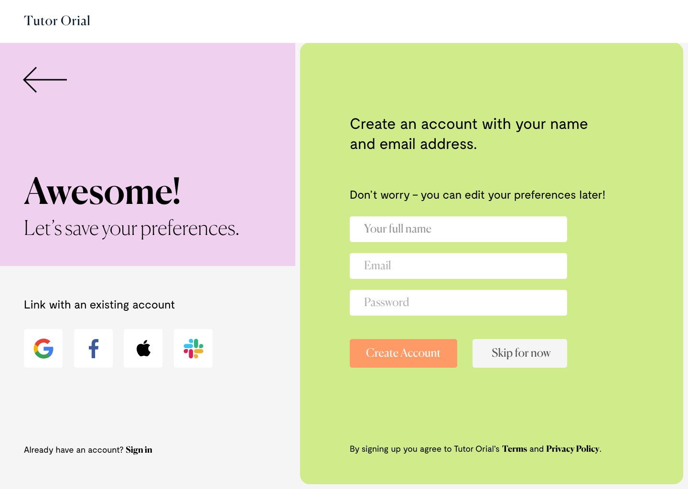
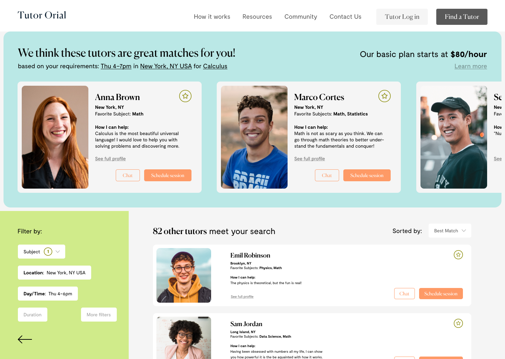
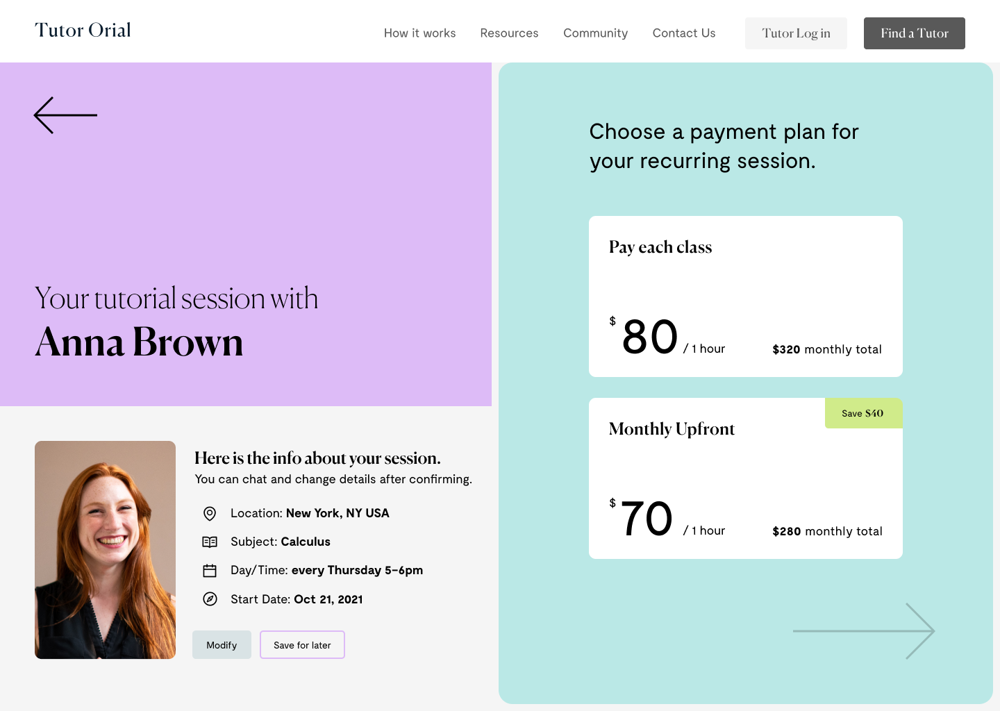
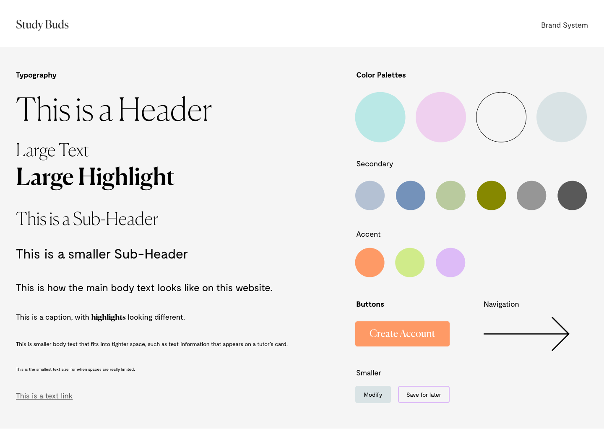

Original landing screen and input form, with notes from heuristic evaluation identifying problem areas

Ideating solutions – hypothesized that simplifying the question form and customizing search results for students looking for tutors online will be a more efficient and enjoyable experience.

Sign up prompt after completing quick form or questionnaire, with option to skip

Search results from user input into quick form or questionnaire

Payment options
Scheduling confirmation page

Brand System UI Style Tile